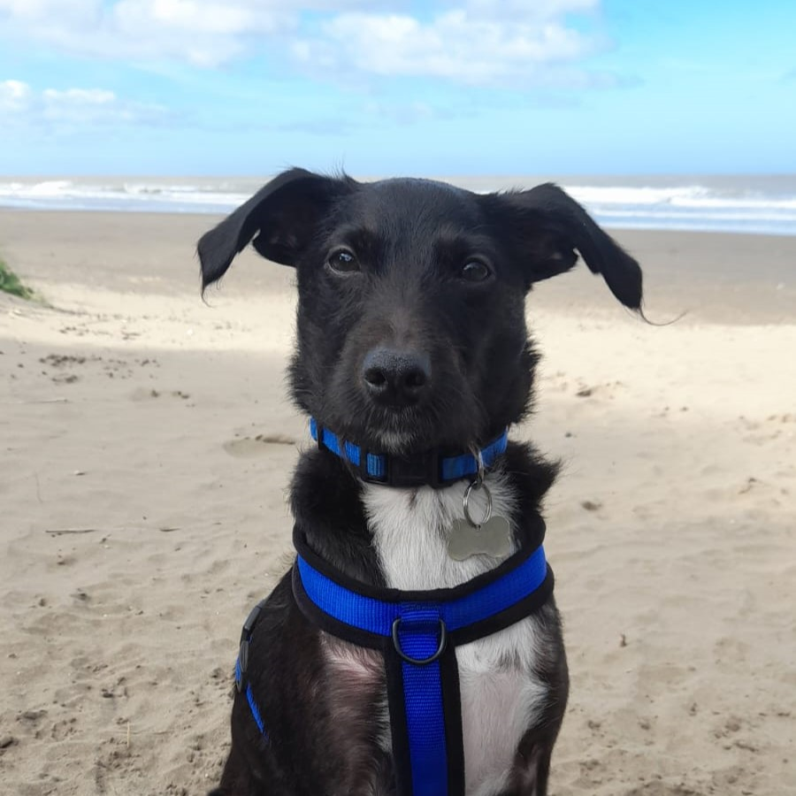

Ficha de Cuidados y Salud

Dieta: Natural cocida (Cerdo). 1 vianda = 1 día (Repartir en almuerzo y cena).
| Tipo | Detalle |
|---|---|
| Ingredientes | Carré de cerdo, Zapallo, zapallito, zanahoria, hígado/corazón vacuno, huevo, aceite (oliva/coco), semillas, carbonato de calcio. |
| Aucic caps (Omega 3) | 1 cápsula diaria con el almuerzo. |
| Cáscara de huevo | Espolvorear un poquitito en el almuerzo y revolver. |
Hospital Veterinario Adrogué: Av. H. Yrigoyen 13.964, Adrogué.
Tel: 4294-4848 | WA: 11-3929-6006
CEVEDE Banfield: Av. H. Yrigoyen 8.017, Banfield.
Tel: 4242-2254 | WA: 11-3773-9690
| Endocrinología | Fernanda Hernandez (Hosp. Adrogué) |
|---|---|
| Dermatología | Guillermo Broglia (Hosp. Adrogué) |
| Cabecera | Bárbara González (Bynnon 4350, José Mármol) - 11-5596-8184 |
| Laboratorio | Centro Vet. Adrogué (Mitre 1783, Adrogué) - 11-6159-6694 |